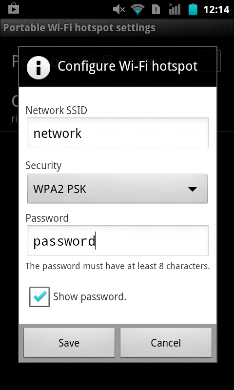
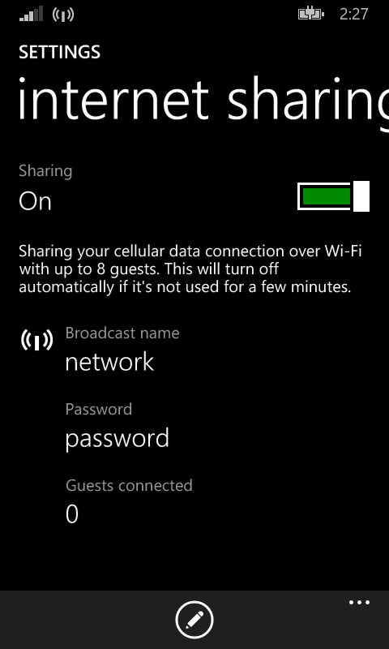
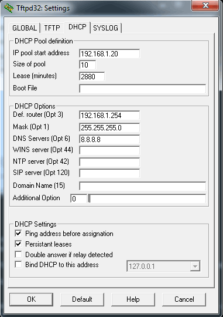
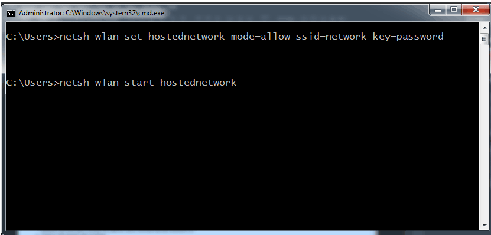

On Windows Phone 8.1 your network must be already saved if you want to connect to it with a static IP.
You need to do it only once. There are many possibilities to save your network:
-
Use wifi tethering on another phone.
This function is available on most Windows Phones, Androids and iPhones.
-
Disable your router or get out of its range.
-
On the second phone, create network with the same name, password and encryption as desired network.
Please note that not all encryption settings are available on different devices.
-
Connect to it.
-
Disable wifi tethering and enable your router.
-
Your network should be saved now and you may connect using static IP.


-
Start a DHCP server on a PC in your network for the time of first connection.
Instructions for Windows are below, Linux users will probably know how to do it on their computers.
- Download http://tftpd32.jounin.net/download/tftpd32.450.zip
- Run tftpd32.exe from this zip.
- Windows firewall may ask if you still want to block this program. Allow it to use Internet.
- Press Settings.
- Open DHCP tab.
- Here you need to fill in some network parameters.
Please note they don't have to be correct, you only want your phone to save the network.
Usually you can rewrite parameters from the screenshot.
- Press OK.
- Connect your phone to your network. Your network should be saved now.
-
Use internet sharing on your PC (only Windows 7, 8, 8.1 and networks with WPA/WPA2 PSK)
- Disable your router or get out of its range.
- Start cmd as Administrator.
- Use two following commands to set network with the same name, password and encryption as the network you want to connect to. Replace network_name and password with your values:
netsh wlan set hostednetwork mode=allow ssid=network_name key=password
netsh wlan start hostednetwork

- Connect to this network with your phone.
- Stop this network issuing command:
netsh wlan stop hostednetwork
- Your network should be saved now and you may use static IP.